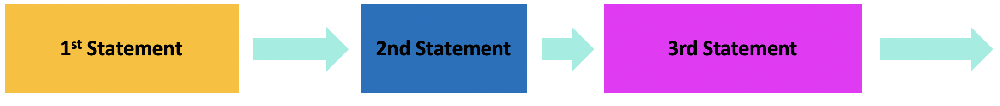
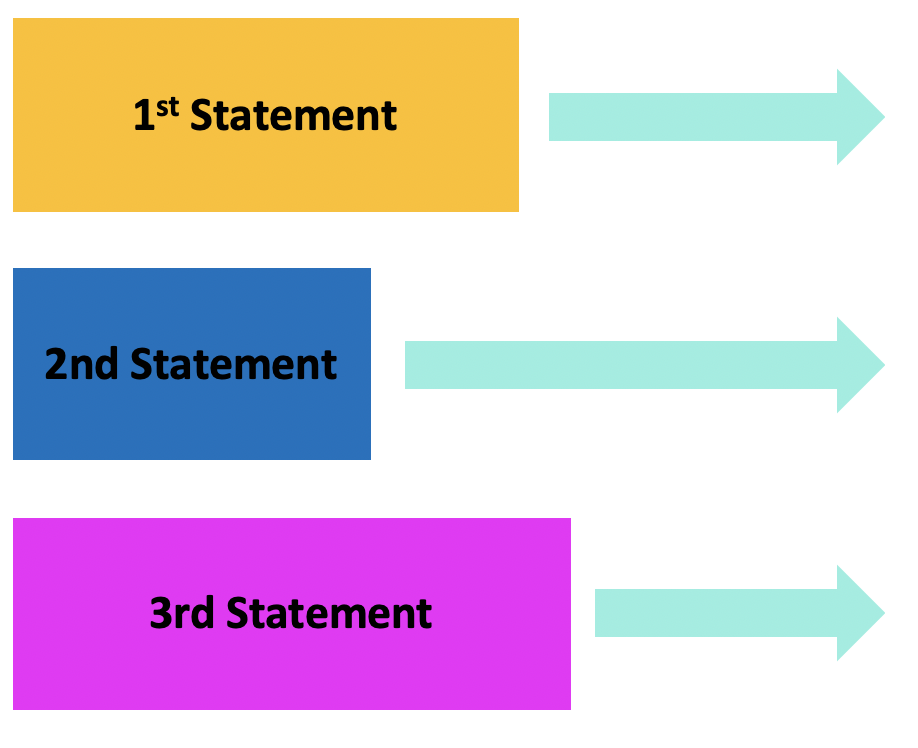
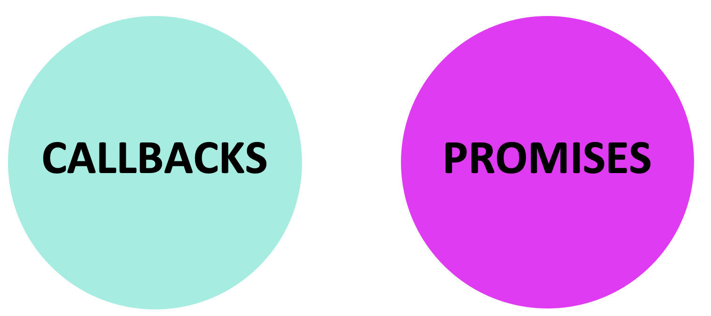

General Assembly
Asynchronous JavaScript & Callbacks
Wilson Espina
Review
What did we do last lesson?
Asynchronous JavaScript

Learning Objectives
At the end of this class, you will be able to:
- Describe what asynchronous means in relation to JavaScript
- Pass functions as arguments to functions that expect them.
- Write functions that take other functions as arguments.
- Build asynchronous program flow using Fetch
Asynchronous JavaScript
Agenda
- Item 1
- Item 2
- Item 3
- Item 4
- Item 5
Asynchronous JavaScript
Exit Ticket Questions
- First item
- Second item
- third item
- Fourth item
Asynchronous JavaScript
Classroom Resources
- Pull changes from the
wilson-espina/jsd-9-resourcesrepo to your computer - In your editor, open the following folder:
Documents/JSD/jsd-9-resources/11-async-callbacks
Ajax & APIs
Homework Review
Asynchronous JavaScript
Classroom Resources
- Pull changes from the
wilson-espina/jsd-9-resourcesrepo to your computer - In your editor, open the following folder:
Documents/JSD/jsd-9-resources/11-async-callbacks
Ajax & APIs
Asynchronous Programming
Asynchronous JavaScript
Synchronous Code
let status
function doSomething() {
for (let i = 0; i < 1000000000; i++) {
numberArray.push(i)
}
status = 'done'
console.log('First function done')
}
function doAnotherThing() {
console.log('Second function done')
}
function doSomethingElse() {
console.log('Third function: '+ status)
}
doSomething()
doAnotherThing()
doSomethingElse()
// result in console
// (after a few seconds):
> "First function done"
> "Second function done"
> "Third function: done"
Asynchronous JavaScript
Synchronous Code
- Statements are executed in order, one after another.
- Code blocks program flow to wait for results.
- Most JavaScript code is synchronous.

Asynchronous JavaScript
Asynchronous Code
- Code execution is independent of the main program flow.
- Statements are executed concurrently.
- Program does not block program flow to wait for results.
- Certain JS statements are asynchronous by default.

Asynchronous JavaScript
Asynchronous Program Flow
$('button').on('click', doSomething);
$.ajax(url, function(data) {
doAnotherThing(data)
});
fetch(url).then(response => {
if (response.ok) {
return response.json();
} else {
console.log('There was a problem.');
}
}).then(doSomethingElse);
Asynchronous JavaScript
Approaches to Asynchronous Program Flow

Ajax & APIs
Functions & Callbacks
Asynchronous JavaScript
How many arguments in this code?
$('button').on('click', function() {
// your code here
});
$('button').on(parameter1, parameter2);